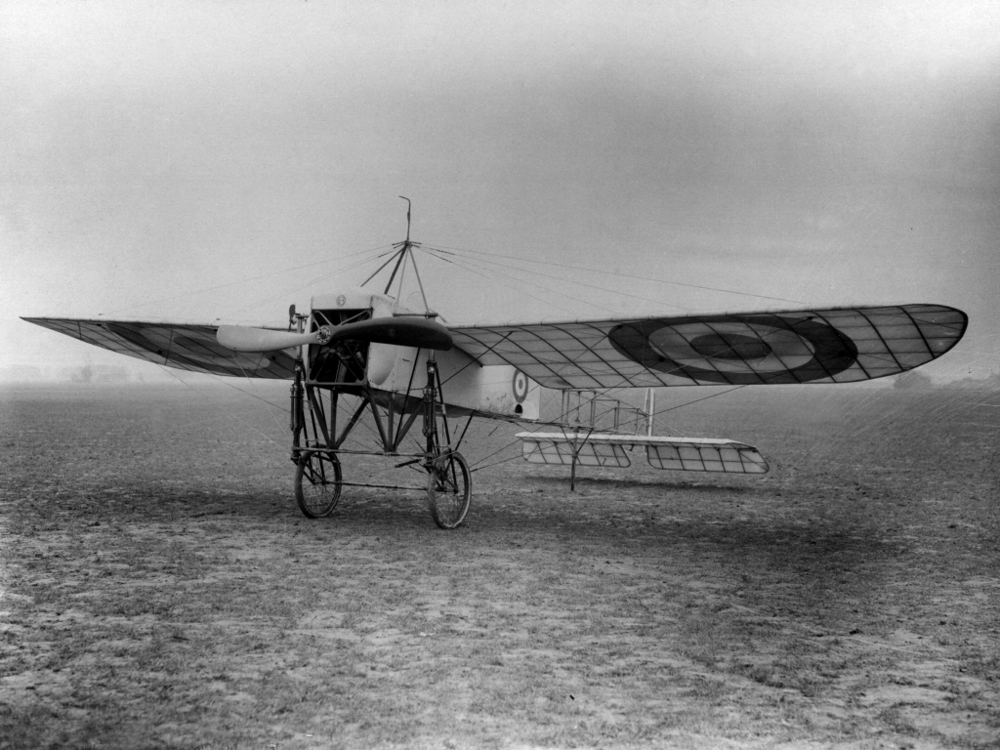

With regard to designing and building aircraft, New Zealand is doing nothing worth mentioning. New Zealand has one aircraft, a Bleriot imported from France.
The force is to consist ultimately of 4 officers, 7 warrant officers and sergeants, 32 mechanics.
The school is at Duntroon. Course includes--mechanics of the aeroplane, aerial motors, meteorology, aerial navigation by compass, aerial photography, signalling, etc. Mr. Harrison is in command with Lieut. H. Petre as assistant.
J. R. Duigan has built an aeroplane of his own design.